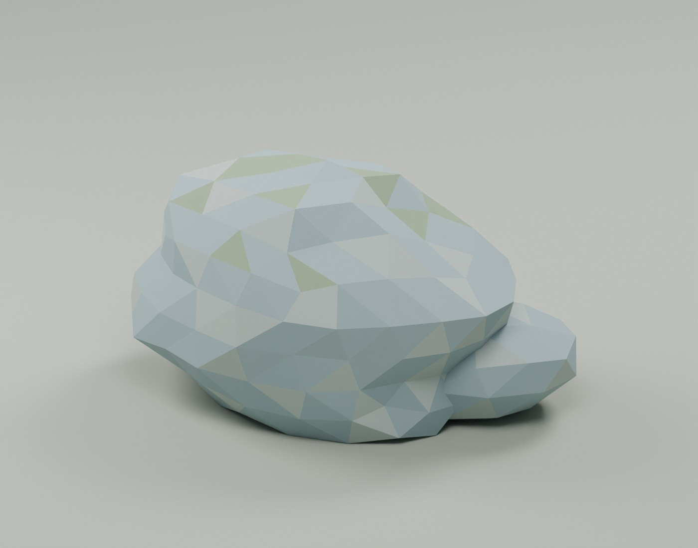
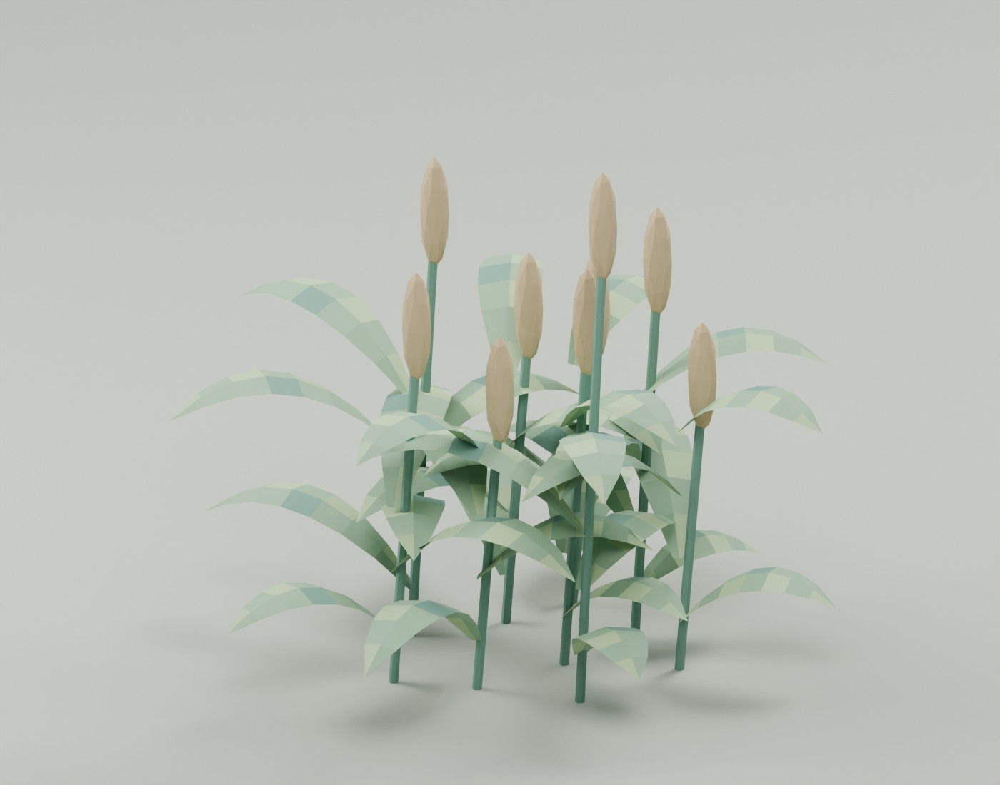
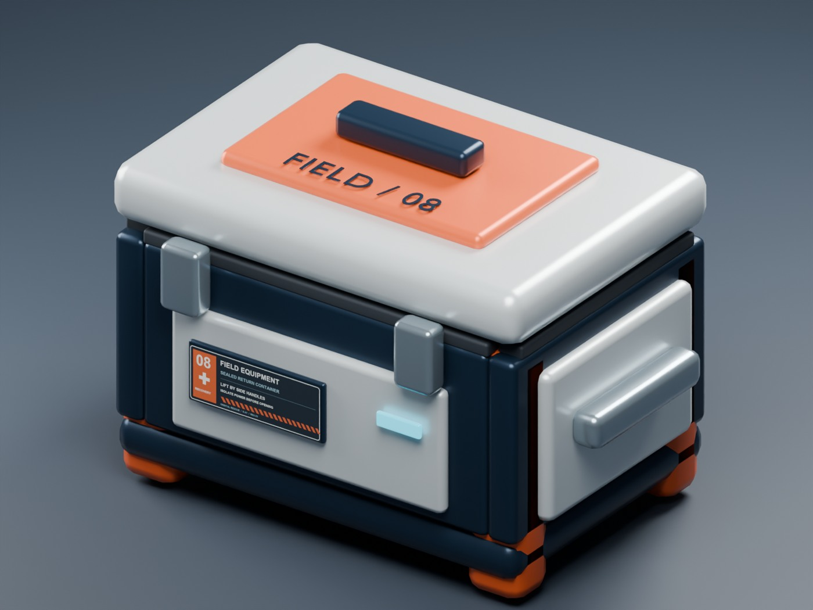
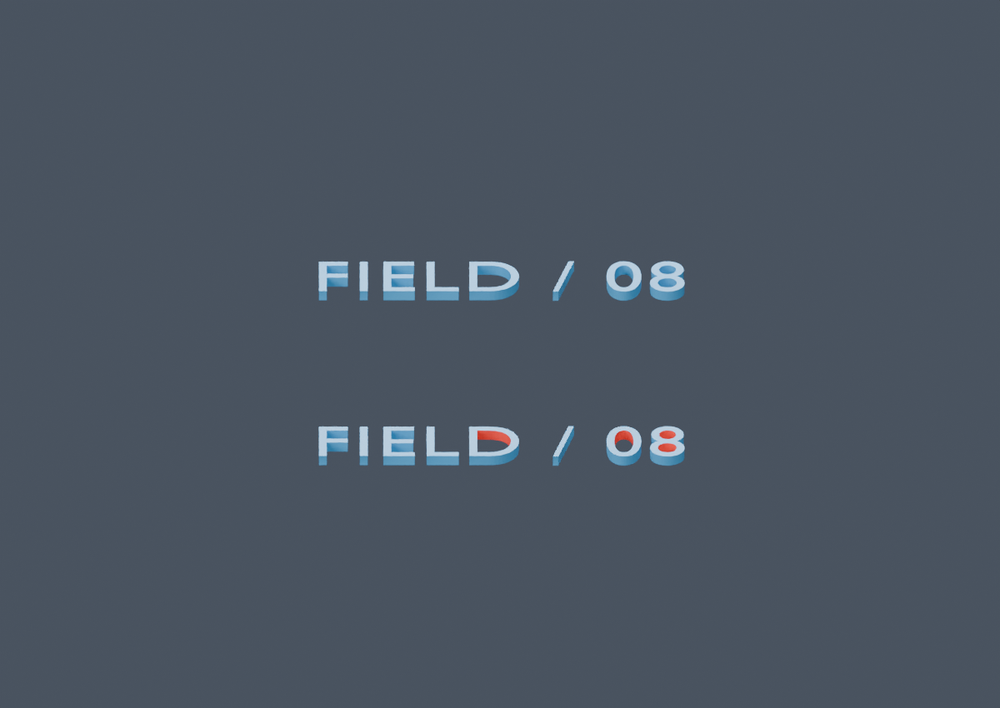
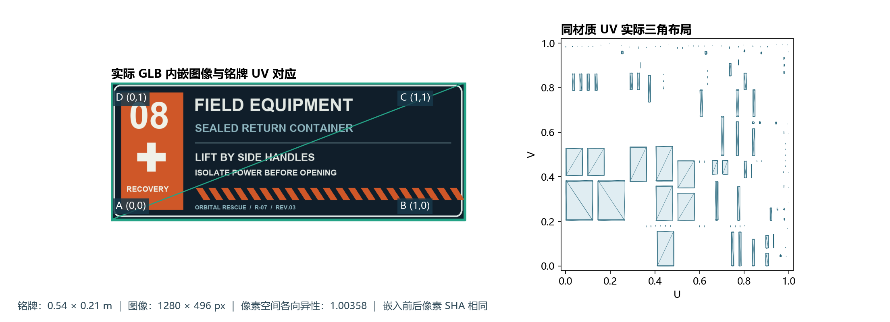
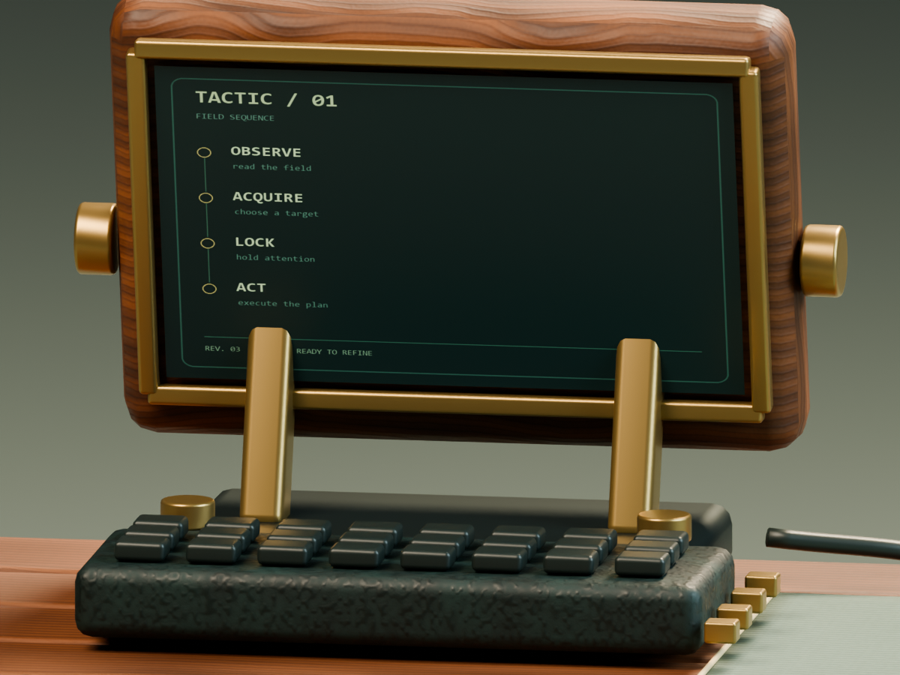
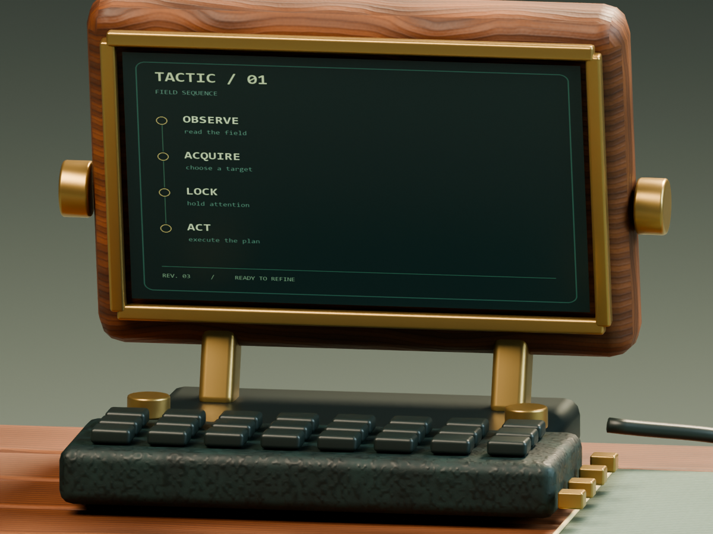

海岸岩石
480 → 144 三角形
为远处显示提供更简洁的 LOD，保留分组轮廓与岩石之间的尺度关系。
模型、检查过程和修订结果。
查看对应图片，或打开源工程继续检查。
ORBIT-07 航外搜救员：从连续服装网格、图集与材质，到骨骼绑定、四组动作及导出修订。荧脉孢株提供有机结构、透明膜叶、风动与 LOD 的互补案例。
ASSET PRODUCTION
游戏道具与环境资产
功能结构、轮廓与显示成本

480 → 144 三角形
为远处显示提供更简洁的 LOD，保留分组轮廓与岩石之间的尺度关系。

1,872 → 610 三角形
用弯曲叶片与双面材质组织植被。检查开放边时，先区分叶片用途与实体缺面。

5,858 三角形 · 开合动画
真实内仓、密封边、铰链与铭牌。把可开合、可容纳任务物的要求落实到结构。
SOURCE MODEL INSPECTION
密封回收箱
发现 → 修订 → 导出回读


铭牌表面 0.54 × 0.21 m，对应 1,280 × 496 px 图像；颜色接入 Base Color。源图与 GLB 内嵌图逐像素一致，像素空间拉伸比为 1.0036。
查看对应标注记录 ↓贴图和开放边检查之外，进一步发现两根支杆遮住终端下方文字。将支架移至屏幕后侧 65 mm，保留底座与后壳的连接；几何、UV 和材质保持一致。


正对屏面 100 × 60 点采样中，被支杆遮挡的点由 154 降至 0。战术台及组合场景都应用修订。
JOINT DEFORMATION
原创肘部技术样例
循环拓扑、权重与屈曲检查
正在读取关节检查材料。
ANNOTATION & REVIEW
个人资产质检样例
对象、规则、证据与复核记录
四条自建记录覆盖局部修订、贴图确认、用途判定和缺面退回，保留对应对象、证据与处理结果。
在线浏览 GLB，也可以下载对应 Blender 源工程，检查网格、材质和动作。
返回交互作品台 ↗